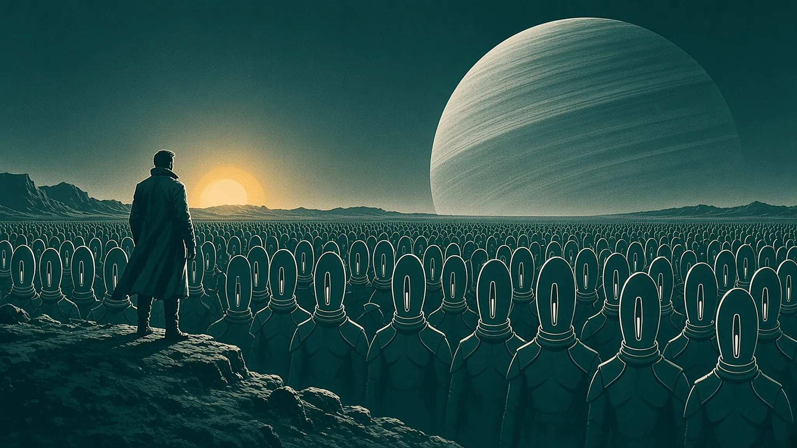

Health
47 of 93
“what causes acid reflux”
0.80
Similarity of its top 5 pages
0 all different1 identical
Distinct pages1.87 of 5

0.78. This week Google's top 5 answers to 93 everyday questions were 0.78 alike, on a scale where 1 means identical: 1.96 distinct answers out of 5.
Every week the tracker asks Google the same 100 everyday questions about money, health, law, science and technology. It reads the first 5 readable pages behind each one and measures how much they say the same thing. A score of 0 would mean five different answers; 1 would mean five copies of one.
of this week's questions return answers that are mostly alike.
of questions get less than two distinct pages out of five.
Top 5 pages this week: marigold is distinct, a helmet is a repeat1.96 of 5 distinct
All 93 questions read this week, lined up from the most varied answers to the most alike. Drag through them.
“what causes acid reflux”
Distinct pages1.87 of 5
Average similarity by topic this week, on the full 0–1 scale. Health answers are the most alike; Finance the least.
Questions are never edited or removed. 45 have been asked since 4 Oct 2026; 55 more joined on 26 Oct 2026. The Questions column counts those read in each run. Week-to-week movement is small and the series is young, so read the line as a level, not a trend.
Most alike this week: “is intermittent fasting healthy” at 0.913. Least alike: “how are capital gains taxed” at 0.401.
| Run | Questions | Similarity |
|---|---|---|
| 4 Oct 2026 | 34 | 0.702 |
| 5 Oct 2026 | 35 | 0.732 |
| 12 Oct 2026 | 38 | 0.743 |
| 19 Oct 2026 | 42 | 0.788 |
| 26 Oct 2026 | 98 | 0.780 |
| 2 Nov 2026 | 96 | 0.773 |
| 9 Nov 2026 | 95 | 0.778 |
| 16 Nov 2026 | 93 | 0.780 |
Real Google results, a fixed panel, a weekly run, and every number public in the repository. The full method, including how pages are chosen and compared, is one click away.